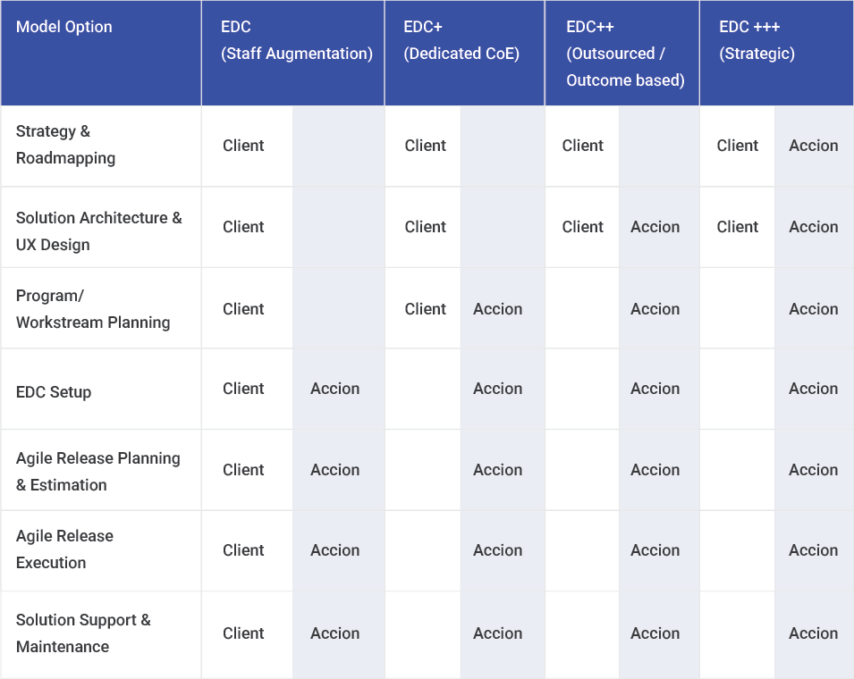
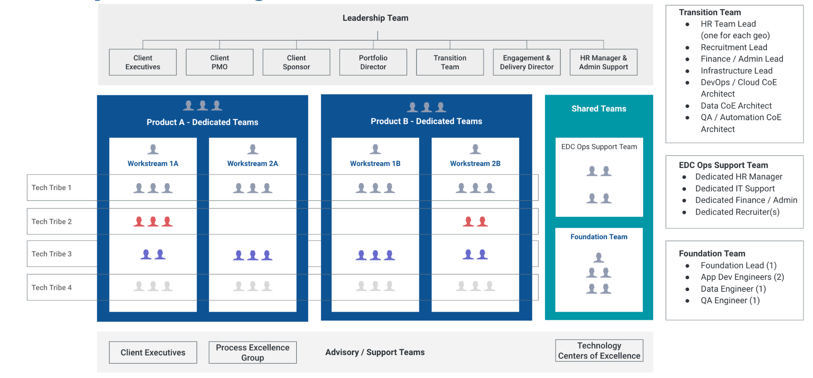
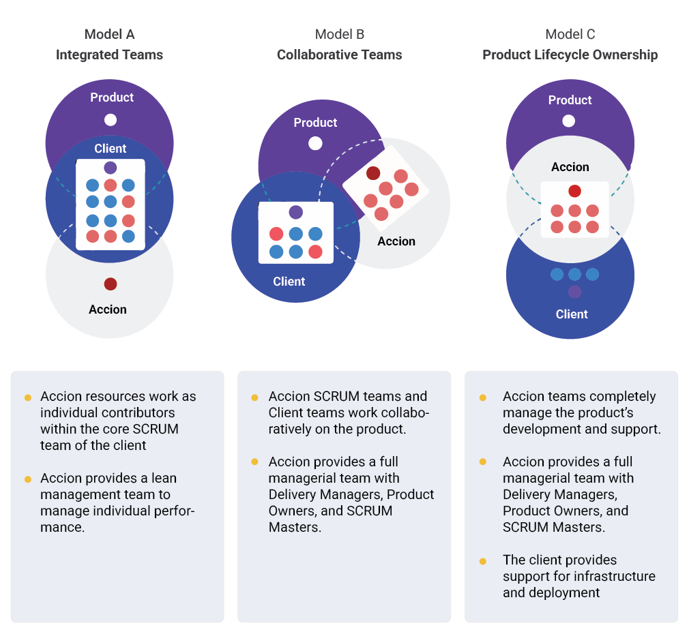

Our Extended Delivery Center is based on Accion's core value propositions of co-development, virtual teams, and a 100% white-box approach. In an EDC engagement model, Accion owns the entire responsibility of delivery. This is based on Accion's strong operational and governance models with a focus on value creation.
The delivery practices & processes are defined and streamlined between the teams onsite and offshore. The team defines the process, governance, and tools that will be used to plan, prioritize and execute defined projects & programs.
The White-box Model approach is based on the following principles.
The EDC models below are classified based on the level of involvement in software development between Accionlabs and the customer.
Below is a representation of a typical Accionlabs EDC delivery model:
The leadership team comprises the key decision-makers of both the client and Accionlabs. This team will be involved in defining the strategic goals, and delivery expectations. Delivery managers are spread to manage a group of projects
The teams are usually grouped based on the product/module they manage for the client. The teams are a mix of lead developers, architects, senior and junior engineers and QA teams, etc based on project priorities, schedule, and project goals. Few resources can be shared between projects like Ops, Design, BA, Architects, etc.
For any successful EDC model, it is important to have the HR, IT admin, Ops support, and TA teams in sync with the functional and operations expectations of the client
The core Center of Excellence team from Accionlabs with specialization in specific areas is involved in this group. They support periodical conversations with the team and provide the right guidance and recommendations based on project needs.
Based on the type of EDC model, the collaboration & communication with the customers vary. Our Accion team org structure is also defined based on the defined model.
The Engagement Delivery Cycle (EDC) outlines four sequential phases for successful project execution: